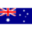
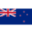

Пожертвование на развитие VeraCrypt с помощью банковского перевода
Вы можете поддержать развитие VeraCrypt, отправив пожертвование посредством банковского перевода на один из перечисленных ниже банковских счетов IDRIX, в зависимости от валюты.
Поддерживаемые валюты: евро , доллар США
, доллар США , британский фунт
, британский фунт , австралийский доллар
, австралийский доллар и новозеландский доллар
и новозеландский доллар .
.
Свяжитесь с нами, если вам нужен официальный счёт для вашего пожертвования.
 Евро SEPA – банковские детали
Евро SEPA – банковские детали
Принимаемые типы платежей: SEPA bank transferts или SWIFT только в евро.
Владелец счёта: IDRIX SARL
IBAN: BE16 9670 3707 4574
Банковский код (SWIFT / BIC): TRWIBEB1XXX
Адрес: TransferWise Europe SA, Avenue Marnix 13-17, Brussels 1000, Belgium
Назначение: Open Source Donation
 Доллар США – банковские детали
Доллар США – банковские детали
Из США, принимаемые типы платежей: ACH и Wire.
Владелец счёта: IDRIX SARL
Номер счёта: 9600000000026614
Номер маршрута: 084009519
Тип счёта: Checking
Адрес: TransferWise, 19 W 24th Street, New York, NY, 10010, United States
Назначение: Open Source Donation
Не из США, принимаемые типы платежей: SWIFT.
Владелец счёта: IDRIX SARL
Номер счёта: 8310085792
Банковский код (SWIFT/BIC): CMFGUS33
Адрес: TransferWise, 19 W 24th Street, New York, NY, 10010, United States
Назначение: Open Source Donation
 Британский фунт стерлингов – банковские детали
Британский фунт стерлингов – банковские детали
Принимаемые типы платежей: Faster Payments (FPS), BACS и CHAPS только из Великобритании.
Владелец счёта: IDRIX SARL
Номер счёта: 56385007
Код Великобритании: 23-14-70
IBAN (для получения GBP только из Великобритании): GB18 TRWI 2314 7056 3850 07
Адрес: TransferWise, 56 Shoreditch High Street, London, E1 6JJ, United Kingdom
Назначение: Open Source Donation
Австралийский доллар – банковские детали
Принимаемые типы платежей: только локальные банковские переводы AUD.
Владелец счёта: IDRIX SARL
Номер счёта: 711714051
Код BSB: 802-985
Адрес: TransferWise, 36-38 Gipps Street, Collingwood VIC 3066, Australia.
Назначение: Open Source Donation
Новозеландский доллар – банковские детали
Принимаемые типы платежей: только локальные банковские переводы NZD.
Владелец счёта: IDRIX SARL
Номер счёта: 02-1291-0218919-000
Адрес: TransferWise, 56 Shoreditch High Street, London, E1 6JJ, United Kingdom
Назначение: Open Source Donation